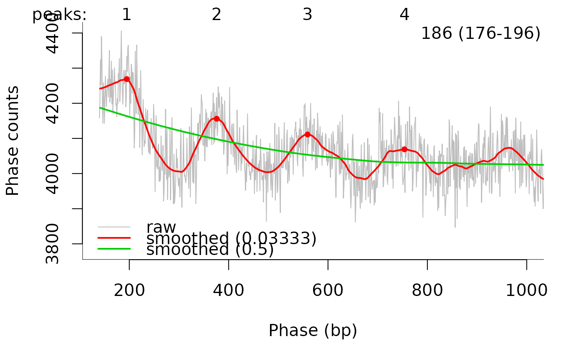

Calculate the frequencies of same strand alignment distances,
for example from MNase-seq data to estimate nucleosome repeat length.
Distance calculations are implemented in C++ (calcAndCountDist)
for efficiency.
calcPhasogram(fname, regions = NULL, rmdup = TRUE, dmax = 3000L)
| fname |
|
|---|---|
| regions |
|
| rmdup |
|
| dmax |
|
integer vector with dmax elements, with the element at
position d giving the observed number of alignment pairs at that
distance.
Phasograms were originally described in Valouev et al., Nature 2011 (doi:10.1038/nature10002). The implementation here differs in two ways from the original algorithms:
It does not implement removing of positions that have been seen less
than n times (referred to as a n-pile subset in the paper).
It does allow to retain only alignments that fall into selected
genomic intervals (regions argument).
estimateNRL to estimate the nucleosome repeat length
from a phasogram, plotPhasogram to visualize an annotated
phasogram, calcAndCountDist for low-level distance counting.
Michael Stadler
bamf <- system.file("extdata", "phasograms", "mnase_mm10.bam", package = "swissknife") pg <- calcPhasogram(bamf) estimateNRL(pg, usePeaks = 1:4)[1:2]#> $nrl #> [1] 186 #> #> $nrl.CI95 #> 2.5 % 97.5 % #> 176.0015 195.9985 #>